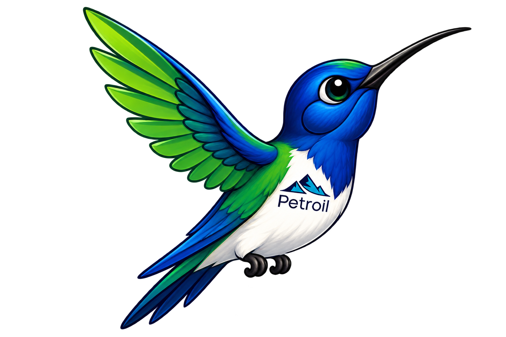
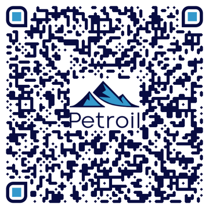
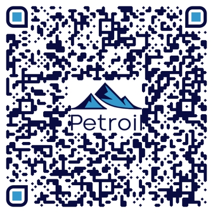

Propuesta para decisión directivaUna especie única.
Una especie única.
Una historia imposible de copiar.
Convertir el compromiso ambiental de Petroil en identidad, preferencia y un legado que trasciende.

El hallazgo
Solo existe naturalmente aquí.
El ala de sable de Santa Marta es endémico de la Sierra Nevada, está En Peligro Crítico y fue considerado perdido para la ciencia durante décadas. Su distribución extrema convierte una amenaza local en una posible pérdida global.
La oportunidad
Innovar para preservar.
Una iniciativa visible, científica y medible que conecte la innovación de Petroil con la conservación del colibrí y su ecosistema.
Petroil no usaría un símbolo. Ayudaría a que ese símbolo continúe existiendo.
Hoja de ruta
De la intención al impacto.
Conocer
Línea base científica.
Integrar
Empresa, academia, Estado y comunidad.
Proteger
Hábitat, agua y conectividad.
Innovar
Bioacústica, datos y SIG.
Demostrar
Resultados verificables.
Movilizar
Educación e identidad.
Impacto para Petroil
De una empresa que informa a una marca que significa.
Identidad propiaReputación con hechosContenido permanenteConexión y preferenciaOrgullo y legado
Petroil podría contribuir a que una de las aves más raras del mundo no se extinga.
Continúa la historia
Elige cómo explorar el proyecto.
Escanea el código QR desde otro dispositivo o abre directamente el recurso.

01 · Propuesta completa
Profundizar en el proyecto
Fundamento estratégico, hoja de ruta y beneficios para la marca.
Abrir propuesta ↗
02 · Identidad visual
Explorar el concepto
Síntesis visual de la identidad que puede representar al proyecto.
Abrir identidad ↗